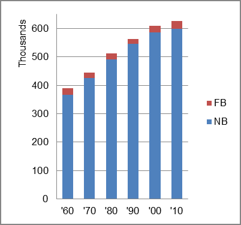

The foreign-born (FB) population increased from 23,336 in 1960 to 27,560 in 2010. That was an increase of 18.1 percent. The foreign-born share decreased from 6.0 percent in 1960 to 4.4 percent in 2010.
The share of the overall population that was native-born (NB) increased by 63.2 percent.
Vermont: Population 1960-2010 
The first chart below shows the three population change factors for three periods adjusted for annual average amounts. The largest factor contributing to population increase in all periods was B-D.
The second chart shows the same data but with an adjustment to reflect births to immigrants shifted to NIM. In it, NIM surpassed B-D as the largest contributor to population increase in the most recent two periods.
Vermont: Sources of Population Change 1990-2013 Vermont: Sources of Population Change (Adjusted) 1990-2013
B-D NDM NIM B-D NDM NIM 90-'99 67.8% 17.1% 15.1% 90-'99 56.6% 17.1% 26.3% 00-'09 71.6% neg. 28.4% 00-'09 47.3% neg. 52.7% 10-'13 63.5% neg. 36.5% 10-'13 28.1% neg. 71.9%